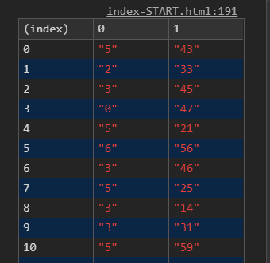

Demo
今天練習的是時間加總
主要運用reduce我們在day4有介紹
取得對象（資料）
範例中共有58個時間，寫在每一個li的data-time中，我們可以透過1
2const dataTime = Array.from(document.querySelectorAll('[data-time]'))
//const dataTime = Array.from(document.querySelectorAll('li'))
先取得對象。
取得時間
我們可以直接在加總的過程中取得資料（較簡潔），或是先取得資料再加總都可以（較易懂）。
我們先取得所有分鐘和秒數資料1
2const mins = dataTime.map((item)=>parseInt(item.dataset.time.split(':')[0]))
const secs = dataTime.map((item)=>parseInt(item.dataset.time.split(':')[1]))
透過map()取得data屬性的資料，並透過split(':')將分秒分開，得到的資料如下：

因為是字串所以要轉成數字
- parseInt()
- parseFloat()
- Number()
這邊有幾個差異比較
加總
透過reduce將總分鐘和總秒數取出1
2
3
4
5
6
7
8
9
10//取得總分鐘
const totalmin = mins.reduce((total,min)=>{
return total += min
},0)
//取得總秒數
const totalsec = secs.reduce((total,sec)=>{
return total += sec
},0)
const total = totalmin*60 + totalsec //分*60+秒 = 總秒數
轉換時間
我們最後的結果必須是 時:分:秒
透過總秒數去轉換1
2
3const hour = Math.floor(total/60/60)
const min = Math.floor((total-hour*3600)/60)
const sec = total%60
- Math.floor 取整數
- %是取餘數的意思，總秒數把60(1分鐘)全部除完剩下的就是秒數。
所以min也可以寫成：1
onst min = Math.floor((total%3600)/60)
方法二
我們也可以直接在加總時再分別取出分鐘和秒數，寫法更簡潔，概念一樣1
2
3
4const total = dataTime.reduce((temp,time)=>{
const alltime = time.dataset.time.split(':')
return temp += alltime[0]*60 + alltime[1]*1
},0)
程式碼
1 | const dataTime = Array.from(document.querySelectorAll('[data-time]')) |